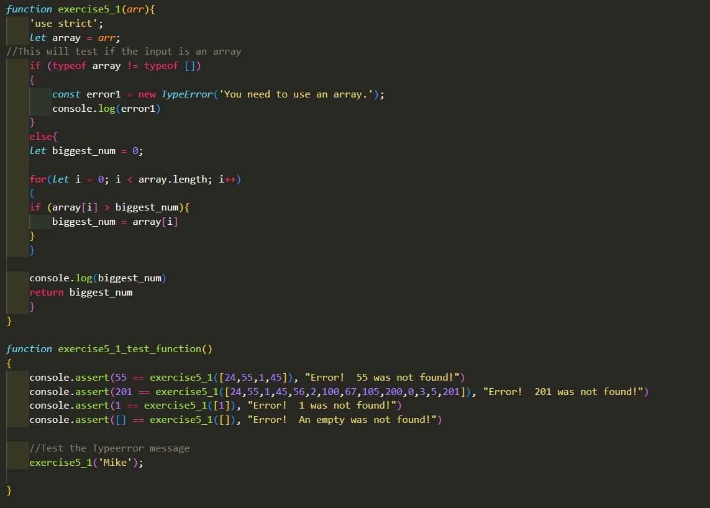

Notes:
- The three common errors are: Sustem error, Porgrammer Error, and User Error
- Warnings will still let the program run, but the program can still be incorrect.
- Test your code incase silent errors that are not flagged may still be lurking. Even though Javascript is a forgiving language, always strive to have good sytax and readability.
- Use 'use strict'; at the top of your JS file to help revent mistakes
- You could use JS Lint, JSHint or ES Hint to check you JS code.
- You can use alerts as breakpoints to check values
- The keyword 'debugger' will run the debugger in the source/console tabs.
- Try and catch statments are a good way to catch mistakes that may arise
NOTE: I do have coding exmples for the book, but it is in the week5 js file.
Questions:
I do not have any questions this week.
Exercises:
Exercise 1: Using asserts and Error message
THis exercise is simply testing things I found in the reading. I used a function to run a handful of test cases on another function, made a if block that checks the type of the input, and also have a function that will throw a specific error I create. To see the code more clearly, please visit the js folder under week5 and click on the week5.js file to see the code.
